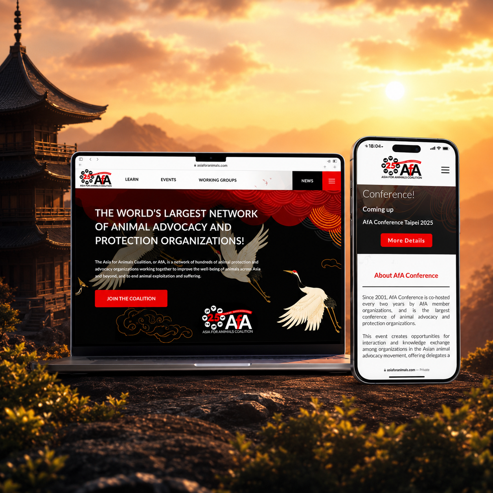
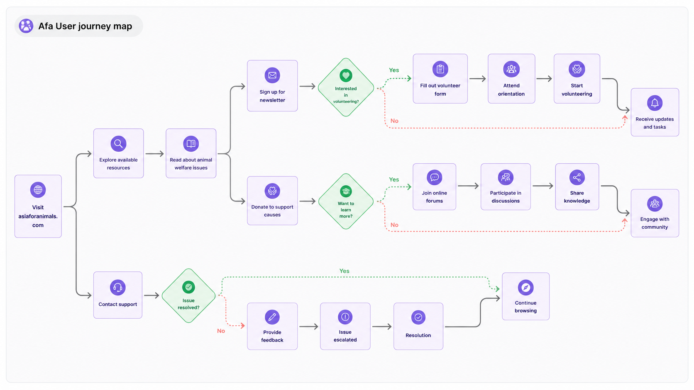
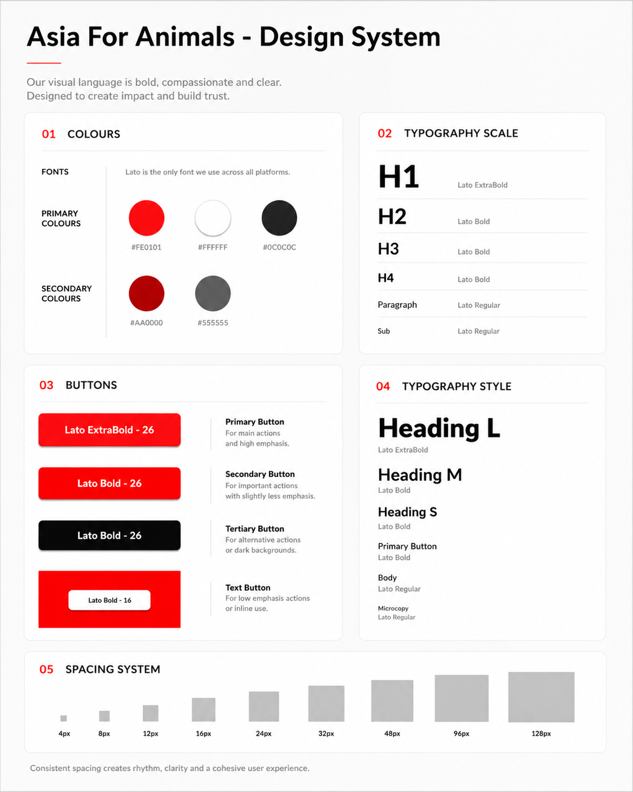
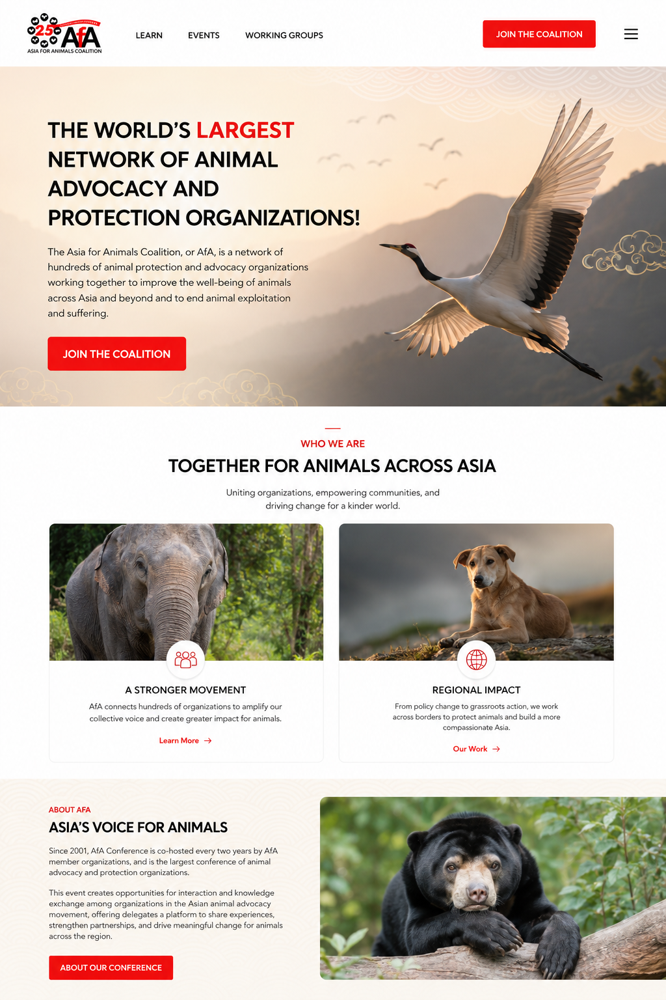
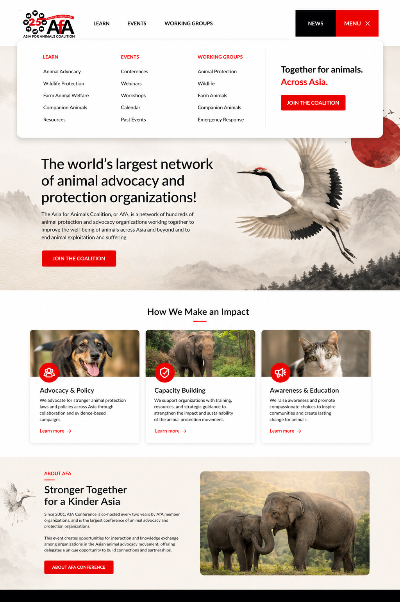

Case study / Asia for Animals
A donation focused digital presence for a global coalition.
Asia for Animals needed more than a website refresh. The project required a unifying digital presence that could clarify the coalition’s mission, support global donors and give Network Member Organisations a stronger shared platform.
The goal was to create a platform that feels visually arresting, culturally fluent and emotionally direct, while making the path to learning, joining, donating and engaging significantly easier to understand.

Outcome
Clearer journeys, stronger narrative and measurable growth.
The redesign connected emotional storytelling with practical UX: clearer navigation, stronger mission visibility and more direct calls to action.
Research
The problem was mission clarity and navigation depth.
The research phase examined established advocacy organisations such as WWF and ASPCA to identify effective donation flows, high impact messaging and credibility patterns. Existing metrics highlighted opportunities for traffic growth, regional reach and engagement improvement.
User surveys pointed to repeated friction: visitors found navigation too complex and the mission was not visible quickly enough. For a cause driven organisation, that delay matters. AfA’s story needed to surface in seconds.

Process
From research to a clearer action system.
The project moved from evidence gathering to journey mapping, then into visual design and prototype validation.
Competitive and behavioural research
Benchmarked advocacy platforms, reviewed traffic opportunities and identified where users were losing clarity or momentum.
User journey mapping
Mapped pathways around learning, volunteering, donating, joining the community and finding support, with News and Donate treated as priority touchpoints.
Design system
Built a visual language around red, white, black and calm neutrals, supported by clear typography, strong calls to action and consistent spacing.
Prototype validation
Tested flows to confirm that users could reach the organisation’s core offerings more quickly and understand the mission without unnecessary interpretation.

Design system
Bold, compassionate and clear.
The visual system uses strong red accents for urgency and action, black for authority, white for clarity and calm neutrals to let mission focused imagery carry emotional weight.
Subtle East Asian visual references create cultural familiarity without turning the design into cliché. The goal was a confident advocacy identity: direct enough to convert, refined enough to build trust.
Interface
Emotion first, action close behind.
The homepage was designed to communicate scale, urgency and credibility immediately. Large hero messaging explains the network’s role, while donation and coalition prompts remain visible without overwhelming the user.
Decluttered sections guide attention toward the organisation’s core actions: learn, donate, volunteer, join and engage with the wider coalition.


Conclusion
Design empathy turned complexity into momentum.
AfA’s digital transformation shows how a cause driven website can become clearer, more emotionally resonant and more action oriented when UX, visual identity and organisational goals are treated as one system.
The result is a platform that makes the coalition easier to understand, easier to join and easier to support.
Next project
Catalina Film Festival
Creative direction and lighter infrastructure for a film festival website.